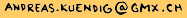
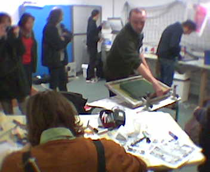

En
quoi ça consiste ?
La
fabrique de fanzines fabrique des fanzines
de A à Z. Alex Baladi, Ibn Al Rabin, Yves
Levasseur, moi, et tous ceux qui veulent
bien participer, dessinent, écrivent, photocopient,
plient, agrafent, coupent et lisent des
fanzines. Il y a une photocopieuse, un massicot,
une agrafeuse, des stylos, du papier,une/des
tables, des chaises, un coin pour lire avec
un tapis, des coussins, de la musique. Les
originaux sont scotchés au mur, un exemplaire
de chaque pend à la corde à linge, des exemplaires
gratuits sont offerts dans un boîte. La
fabrique a déjà été à Sierre, Toulouse (deux
fois), Angoulême, Bourg-lès-Valence, Poitiers,
Moscou, Bourges, en général dans le cadre
de festivals de b.d. Ca dure de 2 à 8 jours,
en général 4. En moyenne on fabrique peut-être
un peu plus que 15 fanzines par jour.
Pour
nous inviter à ton festival il te faut un
local avec des tables et des chaises, et
surtout une photocopieuse. Contacte moi
à 
Villes
déjà visitées
- Lausanne
(festival BD-Fil, septembre 2005)
- Lucerne
(festival Fumetto, avril 2005)
- Bourges
- Moscou
(KomMissia, avril 2004)
- Poitiers
- Bourg-lès-Valence
- Angoulème
(Underboom, 2004)
- Toulouse
(Myrys - Explosion du zine, 2003-2004)
- Sierre
(Cubix rooms, juin 2003)
Et
bientôt
- Genève
- La Fureur de lire (Bibliothèque de St
Jean), 21-25 septembre 2005 Horaires :
21.09 de 10h à 18h, 22.09 de 13h
à 19h, 23.09 de 15h à 22h,
24.09 de 13h à 17h.
Presse
|
|

A
Poitiers

Pakito
Bolino sérigraphie exceptionnellement
la couverture d'un fanzine à Bourg-lès-Valence

A
Moscou (photo : B.Stroun) |